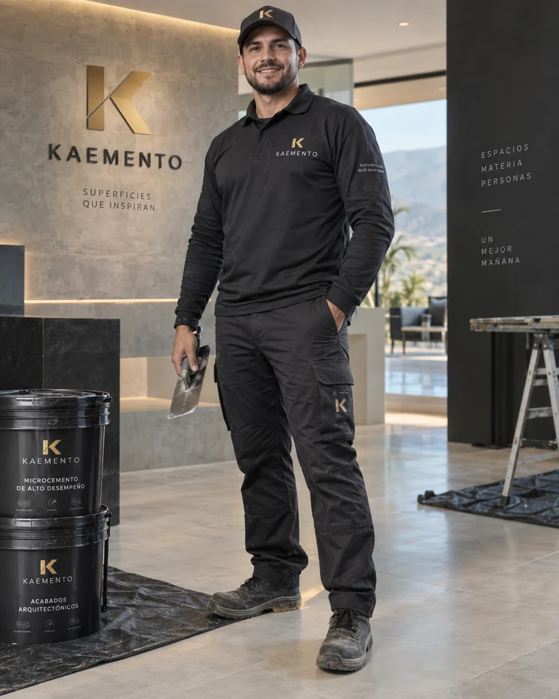
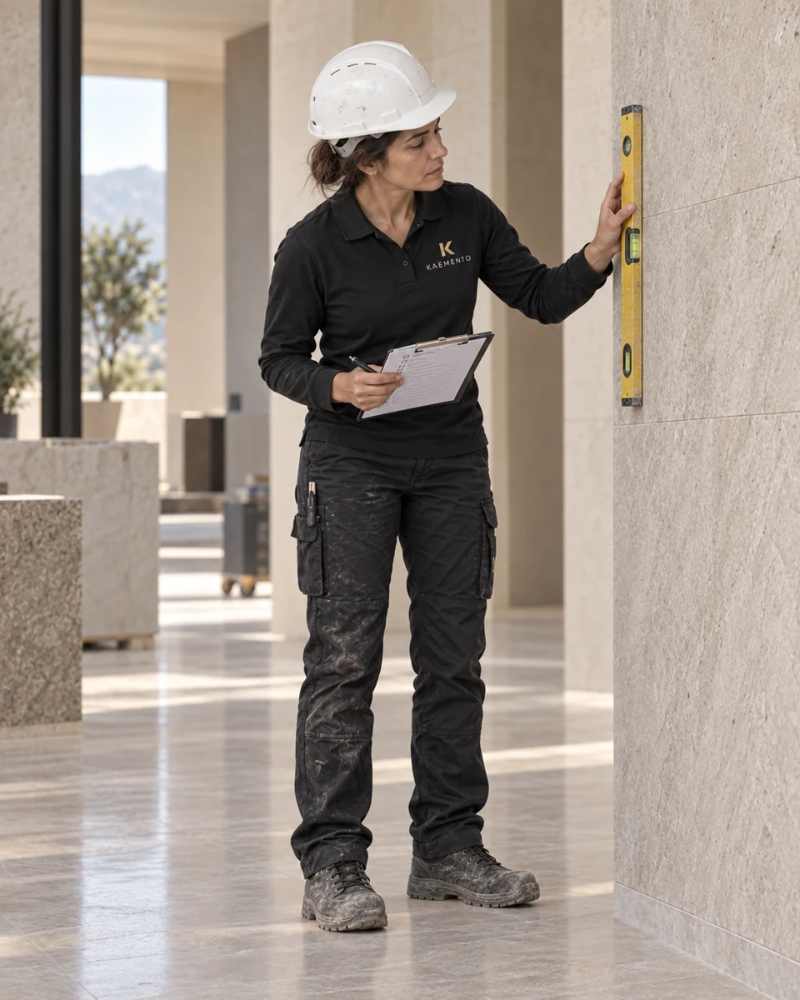
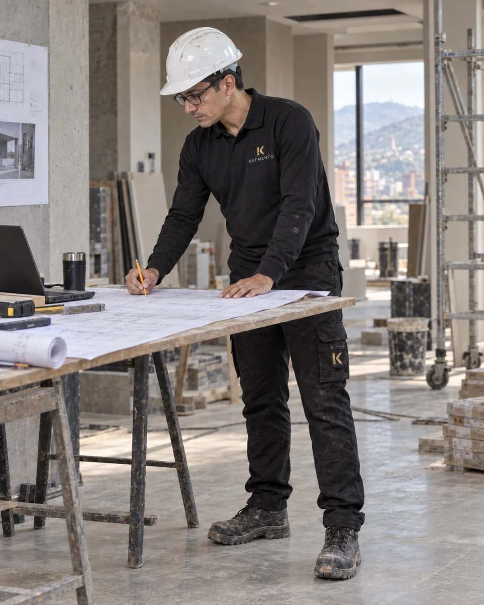
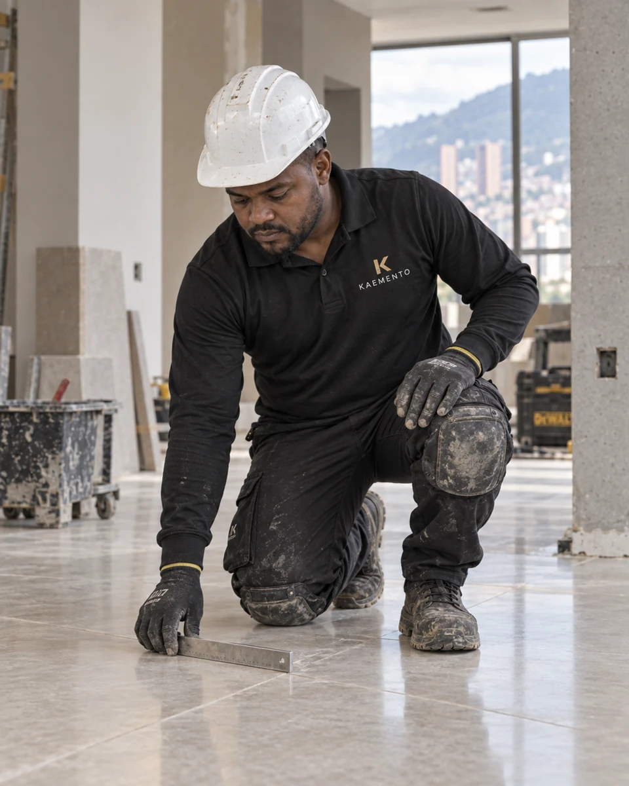
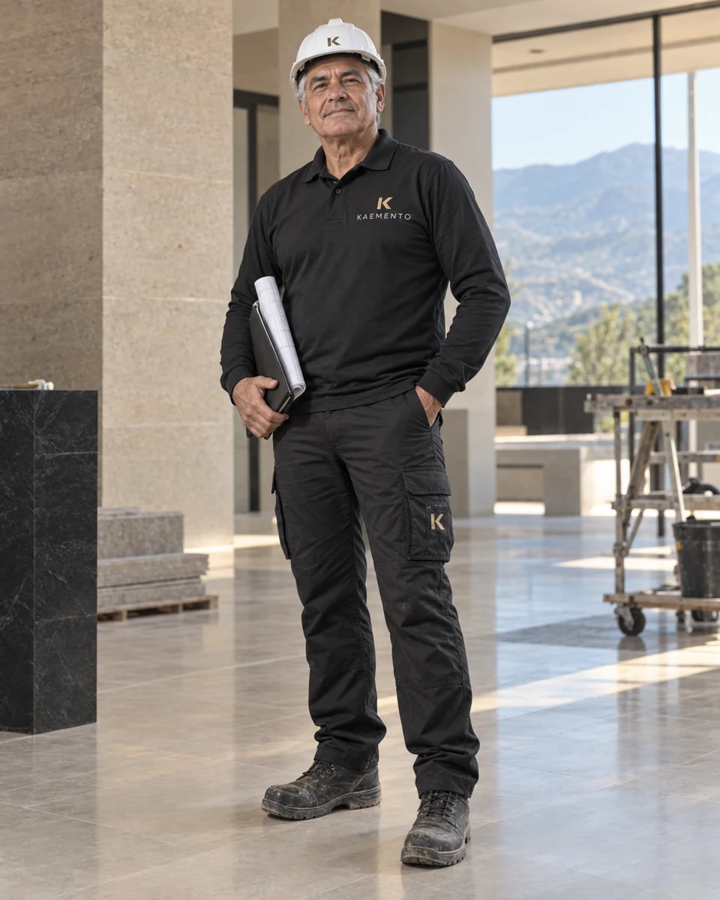

Proyectos arquitectónicos e ingeniería
Diseño arquitectónico, estudios técnicos, mobiliario, coordinación de especialidades y planeación integral.
↗ARQUITECTURA · OBRA CIVIL · MANTENIMIENTO
KAEMENTO integra arquitectura, obra civil, mantenimiento, impermeabilización, fachadas, acabados especializados y productos propios para resolver necesidades reales de construcción y renovación.

Visual conceptual · KAEMENTO
Acerca de KAEMENTO
KAEMENTO es una empresa de proyectos arquitectónicos, obras civiles y mantenimiento. Nacimos desde la ejecución y combinamos planeación, criterio técnico y experiencia en campo para construir, recuperar y proteger espacios.
Además de ejecutar obras, desarrollamos productos propios para superficies, acabados e impermeabilización. El Microcemento KAEMENTO es una de esas soluciones dentro de un portafolio técnico más amplio.
Capacidad integral
Nuestra actividad principal integra proyectos arquitectónicos, obras civiles y mantenimiento. Los acabados especializados y productos propios complementan esa capacidad.
Diseño arquitectónico, estudios técnicos, mobiliario, coordinación de especialidades y planeación integral.
↗Construcción, remodelación, reparaciones locativas y ejecución de proyectos llave en mano.
↗Intervenciones preventivas y correctivas para propiedad horizontal, vivienda, comercio e instituciones.
↗Reparación, nivelación, impermeabilización, sellado y mantenimiento de garajes, sótanos, bodegas y centros logísticos.
↗Cubiertas, terrazas, fachadas y superficies expuestas a humedad, siempre con diagnóstico previo.
↗Limpieza, reparación, resanes, recubrimientos, microcemento y protección superficial.
↗Revisión de infraestructura, acompañamiento técnico, programación, control y entrega de obra.
↗Un producto del portafolio
Microcemento de bajo espesor desarrollado por KAEMENTO para transformar pisos y paredes sin demoliciones extensas, dependiendo del estado y naturaleza del soporte.

Continuidad visual, textura mineral y una atmósfera serena.
Visual conceptual · KAEMENTO
Pisos, muros y escaleras como un sistema integral.
Visual conceptual · KAEMENTO
Texturas claras y profundas para definir la arquitectura.
Visual conceptual · KAEMENTOPortafolio propio
Además de diseñar y ejecutar proyectos, desarrollamos materiales que facilitan la aplicación, reducen reprocesos y mejoran el desempeño de las superficies intervenidas.

Sistema de acabado continuo para pisos y muros. Preparación, capas de microcemento y sellado final.
Conocer producto ↗
Solución para renovar juntas en pisos, paredes y zonas húmedas.
Conocer producto ↗Trayectoria documentada
Presentamos una selección tomada del brochure actualizado con nombres, ubicaciones, fechas, áreas y estados indicados en el documento.

La Vega, Cundinamarca · 4.200 m²
Suministro y aplicación de microcemento en pisos y baños de apartamentos, con preparación de superficies, sistema completo y acabados finales.

Bogotá D.C. · 1.400 m²
Mantenimiento total de fachada, incluyendo reparación, resanes, acabados y protección superficial.

Bogotá D.C. · Área no indicada
Preparación, aplicación y acabado decorativo en patrón de ajedrez blanco y negro.
Nuestro equipo
Aplicación, coordinación e ingeniería para acompañar cada proyecto con atención y criterio técnico.
Conocer KAEMENTO ↗
Cuidado y precisión en cada acabado.

Seguimiento cercano a cada etapa.

Criterio técnico desde el inicio.

Atención a la aplicación y al acabado.

Una mirada integral sobre el proyecto.
Imágenes conceptuales que representan los roles de nuestro equipo.
Documentación
Servicios, productos, aplicación y experiencia de KAEMENTO.
Solicitud de cotización
Podemos acompañar desde el diagnóstico y el diseño hasta la ejecución de obra, el mantenimiento o el suministro de una solución técnica propia.
+57 300 367 1548
kaemento@gmail.com
Bogotá · Cobertura nacional
kaemento.com